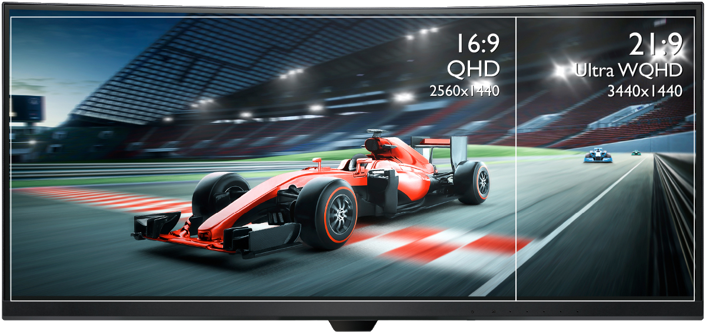
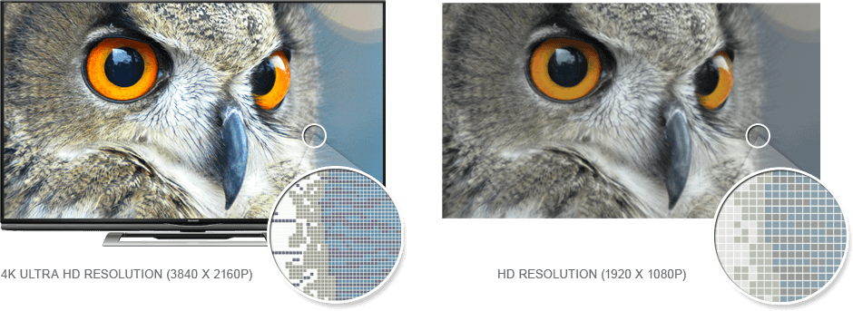
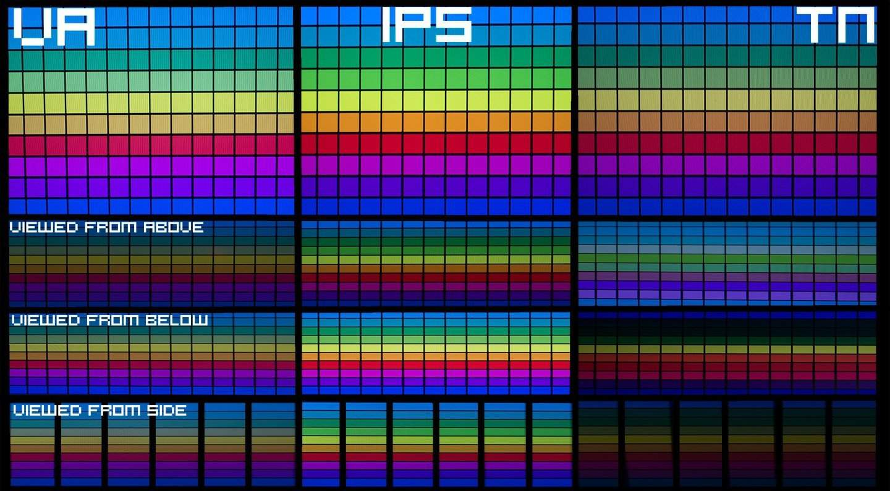
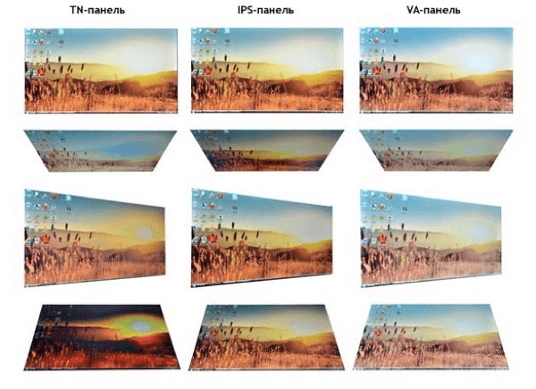
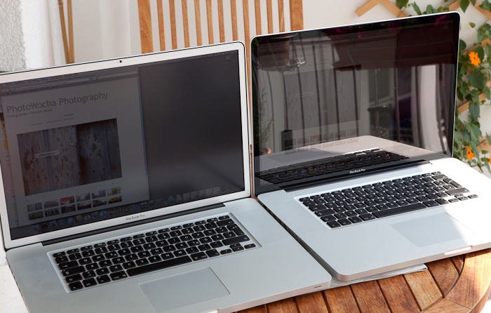
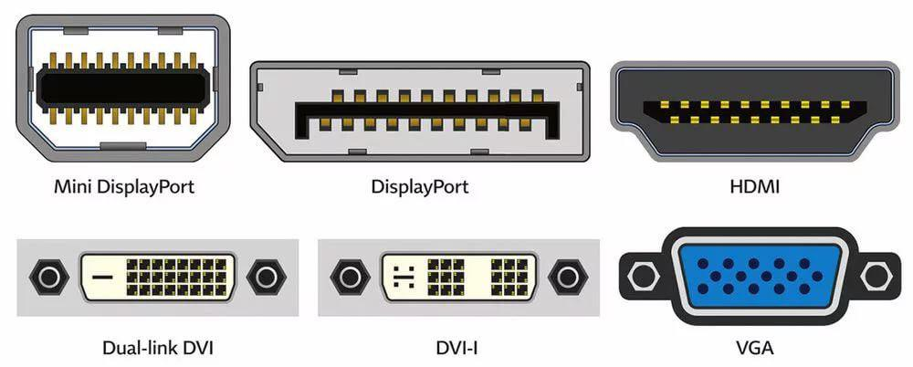
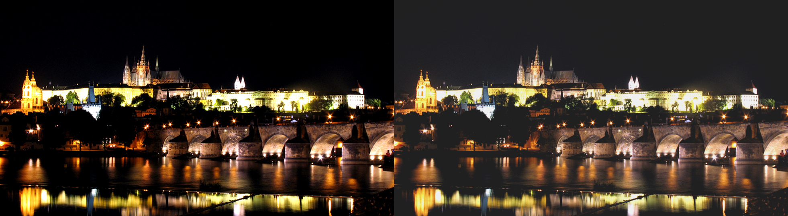

Размер экрана
__________
Диагональ — первое, на что обращают внимание при выборе монитора. Правило «больше =
лучше» работает, но с оговоркой. Из-за большей плотности пикселей на 21-дюймовом экране
разрешение FullHD выглядит лучше, чем на 27-дюймовом.
На рынке современных игровых мониторов с высокой частотой
развертки вы можете встретить модели двух основных форматов (16:9 и 21:9) и пару
фактически эксклюзивных мониторов с нестандартным соотношением 32:9 и 32:10.

С выбором соотношения сторон дела обстоят чуть сложнее. Здесь следует
определиться с тем, что́ вы хотите получить. Часто смотрите фильмы, снятые в правильном
«киношном» формате 2,35:1/2,4:1, предпочитаете одновременно видеть на экране окна трех и
более приложений, занимаетесь обработкой и ретушью фотографий, видеомонтажом, а в
современных играх не откажетесь от расширения поля зрения? В этом
случае настоятельно рекомендуем выбирать среди крупных моделей 21:9 и, возможно,
рассмотреть мониторы форматов 32:9 и 32:10, по сути являющиеся «склейкой»
двух 27-дюймовых Full HD (49-дюймовый вариант) или двух 24-дюймовых WUXGA
(43-дюймовая модель). Также можно купить 2/3 монитора и подключить их к
видеокарте(если она имеет нужное количество выходов под монитор).
Разрешение экрана
__________
В зависимости от выбранной диагонали экрана и соотношения
сторон вы можете остаться с несколькими вариантами рабочего
разрешения, а можете оказаться ограничены одним единственным вариантом.
Чем выше разрешение экрана, тем выше уровень плотности пикселей (ppi),
непосредственно влияющий на четкость картинки. Разница достаточно хорошо
видна при размещении моделей с разным уровнем ppi друг рядом с другом, она
бросается в глаза при переходе от модели с низким ppi к решению с высоким.

Матрица, время отклика
__________
Типы матриц
TN -матрицы — самые старые и недорогие. Экономные геймеры выбирают
их за быстрое время отклика, которое не отменяет отвратительно
маленьких углов обзора.
+ высокая доступность (за редким исключением)
+ максимальная скорость отклика и варианты с самой высокой частотой
вертикальной развертки (200-240 Гц)
− плохие углы обзора, низкая стабильность картинки
− бандинг, постеризация изображения
− выраженный «кристаллический эффект» (не всегда, но часто)
IPS (In-Plane Switching) -матрицы — идеальны по цветопередаче,
контрастности и углам обзора — 178 градусов.
+ высокая скорость отклика (в большинстве случаев)
+ практически неразличимый «кристаллический эффект»
+ хорошие углы обзора и стабильность картинки
+ качественные градиенты и отсутствие бандинга
− самые дорогие при прочих равных (диагональ, разрешение, частота)
MVA/VA (Vertical Alignment) создавали как альтернативу IPS,
чтобы снизить время отклика и конечную стоимость мониторов.
+ глубокий черный цвет (за редким исключением)
+ незаметный «кристаллический эффект»
средние углы обзора и стабильность картинки
бандинг, плохие градиенты (не всегда, но часто)
− эффект Black-Crush
− самая низкая скорость отклика (особенно на темных переходах)


Чем меньше, тем лучше. Средний показатель 4-8 м/с,
киберспортсмены и про-геймеры предпочитают мониторы с временем отклика 1-2 м/с.
Больший показатель чреват размытостью изображения, шлейфами за движущимися объектами
и бесконечным циклом смертей в онлайн-шутерах. Зато какая отговорка: «Не руки кривые,
а на мониторе время отклика высокое!».
Покрытие монитора
__________
Мониторы с матовым покрытием меньше бликуют и не отражают внешние источники света,
за счет чего им нужно меньше яркости. Глянцевые экраны предлагают лишь чуть более
сочную картинку. Если бюджет на монитор не ограничен, присмотритесь к мониторам с антибликовым покрытием. Такие
экраны сочетают достоинства обеих технологий.

Разъемы подключения
__________
Частота обновления означает сколько раз в
секунду монитор полностью перерисовывает и выдает изображение. Таким образом,
если у вас монитор с 60 Гц, то увидеть на мониторе больше 60 FPS не получится.
Чем больше частота обновления, тем плавнее передается движение. Но бытует вполне
мнение, что выше 60 Гц не каждому человеку нужно, потому что заметить и ощутить
больше сможет только чуткий человек/киберспортсмен. Поэтому монитор имеет смысл
брать с частотой 140 Гц.

VGA (Video Graphics Array) отметаем сразу —
самый древний разъем, который передает только аналоговый сигнал в низком разрешении.
DVI (Digital Visual Interface) — старый, но
благодаря нескольким итерациям актуальный тип подключения. Например, DVI-A
передаёт только аналоговый сигнал, тогда как DVI–I аналог и цифру, а DVI-D
только цифру. В режиме Dual Link через разъем можно передать разрешение
вплоть до 2560×1600, но отсутствие звука делает технологию не универсальной.
HDMI — золотой, полностью цифровой стандарт
с поддержкой передачи звука. Тип подключения успел пережить несколько итераций,
в магазинах чаще всего встречаются мониторы с HDMI 1.4/2.0/2.1. Выше версия —
выше пропускная способность. Последний представили в январе 2017-го, стандарт
поддерживает вывод изображения в 10K с частотой обновления вплоть до 120 Гц.
Яркость и контрастность
__________
Традиционно яркость подсветки измеряют в канделах
на квадратный метр. Чем больше число в заявленных характеристиках, тем ярче экран.
Оптимальное значение для игрового монитора — 300 кд/м2.
Говоря о яркости, нельзя не упомянуть контрастность.
Производители пошли на поводу маркетологов, после чего в документации к статической
контрастности добавилась динамическая. Обе характеризуют соотношение уровня белого
к уровню черного цвета. Уловка в том, что динамический берет за основу уровень
черного при минимальной подсветке (полностью выключенный экран) к уровню белого
при максимальной подсветке (яркость на полную).
Надо ли говорить, что такие значения недостижимы
в обычном пользовании, поэтому обращать внимание есть смысл исключительно на статическую
контрастность. Необходимый минимум — 1000:1. Больше — можно, меньше — ни в коем случае.
